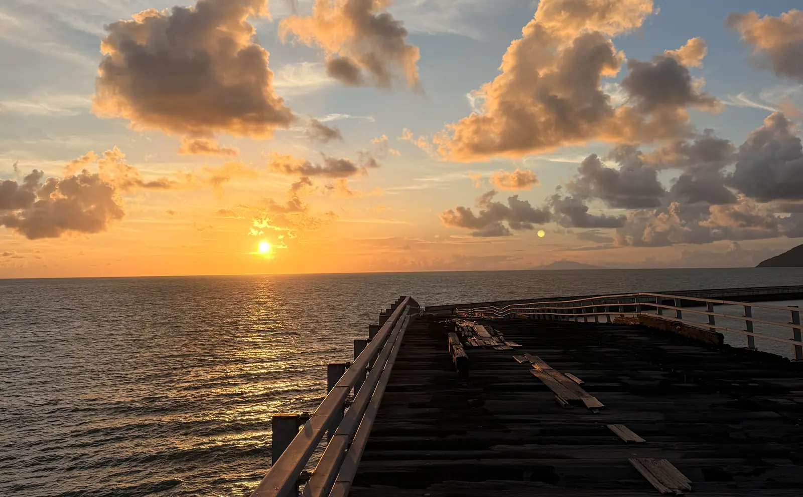
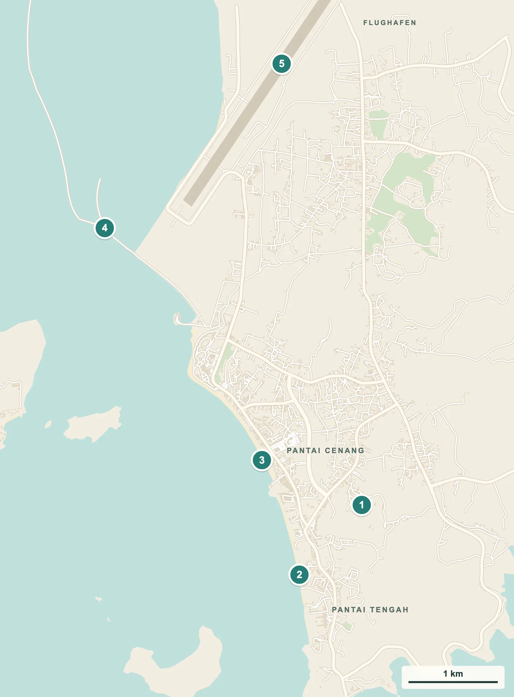
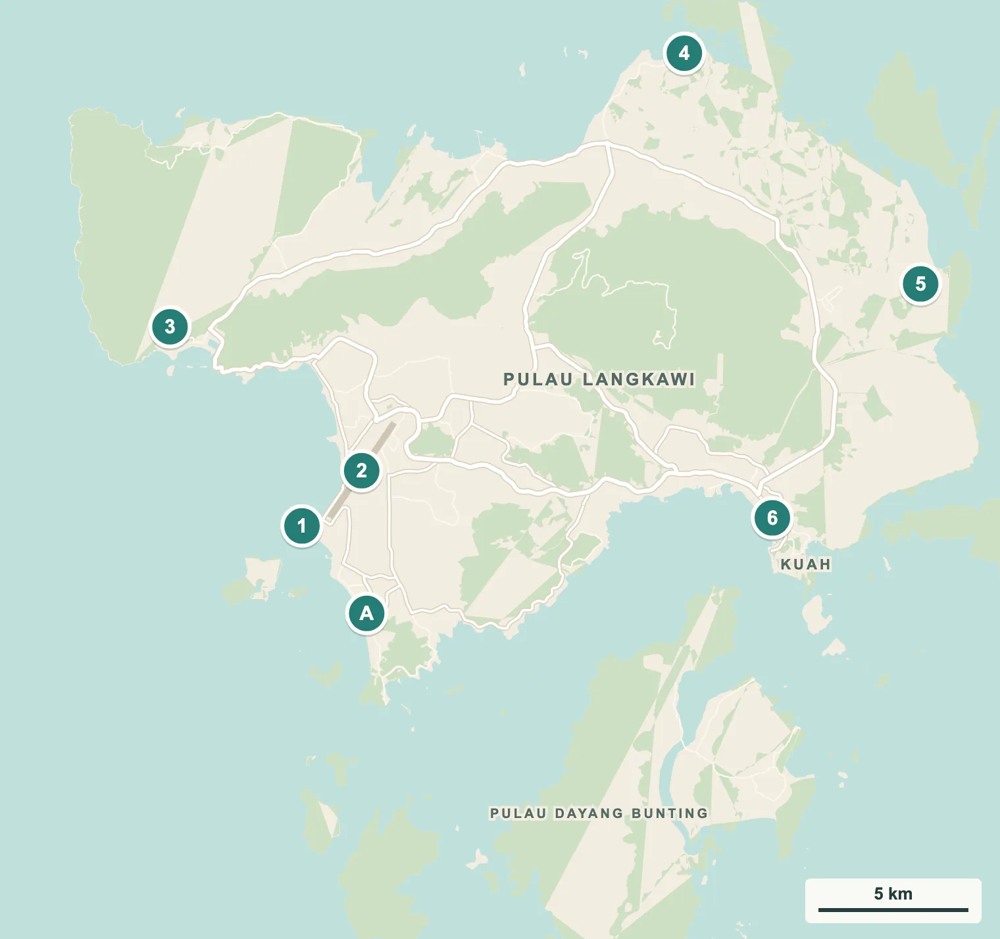

Ja, wenn …
… du nach Wochen in Städten einfach mal ankommen willst. Strand, Sonnenuntergang, Roller fahren, gut essen, nichts müssen. Dafür ist Langkawi gemacht.

Zwei Wochen Inselleben mit Roller, Regen und jeden Abend einem Sonnenuntergang. Plus ein Gastgeber, den wir am liebsten mitgenommen hätten.
Guide entdeckenUnser erster Abend: Füsse im warmen Sand von Pantai Tengah, eine Dose Tiger in der Hand, die Sonne verschwindet hinter den Inseln. Wir schauen uns an und wissen: Das wird jetzt jeden Abend so gemacht. Und genau so kam es auch, zumindest an den Abenden, an denen es nicht geregnet hat.
Langkawi ist eine Insel im Nordwesten von Malaysia, kurz vor der Grenze zu Thailand. Mit rund 100 Inseln, Regenwald, Stränden und dem Status als zollfreie Zone ist sie eines der beliebtesten Ferienziele des Landes. Wir waren zwei Wochen da, in einer Unterkunft mitten im Dschungel, mit einem Roller und erstaunlich wenig Plan.
Hier steht alles, was du für deinen Besuch brauchst, und was wir dabei erlebt haben. Inklusive der Seilbahn, die wir nie gesehen haben.

Zwei Wochen, zwölf Sonnenuntergänge, gefühlt zwanzig Regenschauer.
Für ein paar ruhige Strandtage ja. Für Abenteuer und Kultur gibt es bessere Orte in Malaysia.
… du nach Wochen in Städten einfach mal ankommen willst. Strand, Sonnenuntergang, Roller fahren, gut essen, nichts müssen. Dafür ist Langkawi gemacht.
… du türkisfarbenes Wasser wie auf den Perhentian-Inseln oder in Thailand erwartest. Das Meer vor Pantai Cenang ist eher grünlich, und in der Regenzeit fällt viel ins Wasser, im wahrsten Sinn.
Für Strand, Seilbahn und eine Bootstour reichen vier bis fünf Nächte. Wir waren zwei Wochen da, weil wir zwischendurch auch einfach arbeiten und durchatmen wollten.
Die meisten Unterkünfte und Restaurants liegen im Südwesten an Pantai Cenang und Pantai Tengah, gleich neben dem Flughafen. Die Ausflüge verteilen sich über die ganze Insel.


Sonnenuntergänge, Flugzeuge und ein Steg, den es eigentlich nicht mehr gibt.


Ein Ritual, das wir nie gebrochen haben. Ausser es hat geregnet. Was oft passiert ist.
Vom alten Steg an der Jalan Kuala Muda siehst du die Flieger tief über dem Wasser zur Landung ansetzen.
Zwei Wochen, ein Roller, rund 8 CHF am Tag. Damit kommst du überall hin, auch wenn du manchmal unter einer Tankstelle warten musst.
Das meiste kostet nichts ausser etwas Benzin für den Roller.
Die zwei bekanntesten Strände der Insel, direkt nebeneinander.

Pantai Cenang ist der Hauptstrand von Langkawi: ein langer, breiter Sandstrand mit Strandbars, Restaurants, Läden und Wassersport. Abends wird es laut, mit bunten Lichtern und Musik aus den Bars. Direkt südlich schliesst Pantai Tengah an, ruhiger, mit weniger Bars und mehr Platz im Sand.
Unser Stammplatz war Pantai Tengah, ein paar Minuten von unserer Unterkunft. Dort sassen wir fast jeden Abend. Bei Ebbe wird der Strand so flach, dass sich der Himmel im nassen Sand spiegelt.
Der eigentliche Grund, warum man auf Langkawi bleibt.

Die Westküste von Langkawi schaut direkt aufs offene Meer, die Sonne geht hinter den kleinen vorgelagerten Inseln unter. Kein Abend war wie der andere: mal golden, mal knallrot, mal nur ein schwacher Schimmer hinter grauen Wolken.
Unsere Regel: Sobald die Sonne tief steht, sitzen wir im Sand. Mit einer Dose Tiger, die auf Langkawi dank Zollfreiheit so wenig kostet, dass man fast ein schlechtes Gewissen bekommt. Fast.
Ein halb zerfallener Holzsteg, über dem die Flugzeuge landen.

Nördlich von Pantai Cenang führt die Jalan Kuala Muda am Meer entlang, parallel zur Landebahn des Flughafens. Dort ragt ein alter Holzsteg ins Wasser, mit fehlenden Planken, rostigen Geländern und einem Blick, für den man gern ein bisschen balanciert. Die Flugzeuge setzen direkt darüber zur Landung an.
Wir waren am 8. September zum Sonnenuntergang dort und mussten uns entscheiden: Sonne fotografieren oder Flugzeuge? Wir haben beides versucht und beides halb geschafft. Der Steg ist nicht offiziell freigegeben und stellenweise kaputt. Wenn du hingehst, pass auf, wo du hintrittst.
Ein heller Sandstrand im Norden der Insel.

Tanjung Rhu liegt im Norden, rund 45 Minuten mit dem Roller von Pantai Cenang. Der Strand ist heller und ruhiger als im Süden, mit Blick auf kleine Inseln und Kalkfelsen. Am Ende steht ein bunter Schriftzug für das obligate Foto.
Wir sind am 13. September hochgefahren, durch Dörfer und Kautschukplantagen. Die Fahrt hat sich gelohnt, auch wenn der Himmel wieder einmal mehr Wolken als Blau hatte.
Die bekannten Ausflüge der Insel. Preise und Öffnungszeiten ändern sich, prüf sie kurz vor dem Besuch.

Eine der steilsten Seilbahnen der Welt bringt dich vom Oriental Village auf den Gunung Mat Cincang, auf rund 700 Meter. Bei schlechtem Wetter steht sie still, und genau das war bei uns jedes Mal der Fall, wenn wir hinwollten. Plan sie für einen klaren Morgen ein und schau vorher auf der Website, ob sie fährt.

Die geschwungene Hängebrücke auf dem Gipfel, 125 Meter lang und an einem einzigen Pfeiler aufgehängt. Erreichbar nur mit dem SkyCab, und nur wenn dieser fährt. Wir haben sie nur auf Fotos gesehen.

Sieben natürliche Becken, über die ein Wasserfall nach unten fliesst, rund zehn Minuten von der Talstation des SkyCab. Der Weg hinauf führt über viele Stufen. Nach Regen führt er mehr Wasser, die Felsen sind dann aber rutschig.

Mit dem Boot durch Mangroven und zwischen steilen Kalkfelsen, oft mit Halt bei einer Fledermaushöhle und einer Fischfarm. Teil des UNESCO Global Geopark Langkawi. Touren starten am Steg von Kilim, Preise je nach Bootsgrösse und Dauer, vor Ort vergleichen.

Kuah ist die Hauptstadt der Insel, mit Fährhafen, Märkten und den grossen Duty-free-Läden. Am Hafen steht der Eagle Square mit einer zwölf Meter hohen Adlerstatue, dem Wahrzeichen von Langkawi.

Halbtagestouren mit dem Boot zu den kleinen Inseln im Süden: Badestopp am Süsswassersee auf Pulau Dayang Bunting, Adler beobachten und ein Strand auf Pulau Beras Basah. Angeboten an fast jeder Ecke in Pantai Cenang, Preise vor Ort vergleichen.
Mit Roller, mit Plan B für den Regen.
Wenn das Wetter mitspielt.
Mit Norden und Osten.
Kam bei uns öfter vor, als uns lieb war.
Auf Langkawi isst man einfach und günstig. Oder man kocht selbst.
Meistens in kleinen Warungs rund um Pantai Cenang, den einfachen Lokalen mit Plastikstühlen, wo der Reis gut und die Rechnung klein ist. Ein Ort hat es uns besonders angetan: Mr Thai in Pantai Cenang. Wir waren so oft dort, dass wir irgendwann nicht mehr in die Karte schauen mussten.
An vielen Abenden haben wir auch selbst gekocht. Unsere Unterkunft hatte eine Küche für alle Gäste, und nach Wochen auswärts essen war ein einfacher Teller Pasta plötzlich ein kleines Fest.

Reis mit einer Auswahl an Currys, Gemüse und Fleisch aus der Theke. Du zeigst, was du willst, und zahlst nach Teller. Günstig und gut.
Rund um Pantai Cenang und in Kuah gibt es viele Seafood-Restaurants, oft mit Thai-Einschlag. Frag vorher nach dem Preis, Fisch wird oft nach Gewicht berechnet.
Bier, Wein, Schokolade und Zigaretten sind auf Langkawi zollfrei und deutlich günstiger als auf dem Festland. Ein grosser Grund, warum der Sonnenuntergang mit Tiger so gut funktioniert.
Von Mai bis Oktober bringt der Südwestmonsun viel Regen, im September und Oktober am meisten. Bei uns hat es an vielen Tagen geregnet, meist kurz und heftig. Plane flexibel und hab einen Plan B.
An den Stränden im Westen gibt es immer wieder Quallen, auch giftige. Im November 2025 starb ein Kleinkind nach einem Quallenstich an Pantai Cenang (Malay Mail). Achte auf Warnschilder und bade nicht nach starkem Regen.
In Malaysia fährst du links. Auf dem Roller gewöhnst du dich schnell daran, aber an Kreuzungen und beim Abbiegen gut aufpassen. Helm ist Pflicht.
Für den Roller verlangen viele Vermieter einen Führerausweis, die Polizei kontrolliert ab und zu. Nimm deinen Schweizer Ausweis und einen internationalen Führerausweis mit, und prüf, ob deine Kategorie für Motorräder gilt.
Rund um unsere Unterkunft lebten wilde Affen. Sie sind neugierig und frech. Nichts Essbares offen liegen lassen und Fenster schliessen.
Die Seilbahn fährt bei Wind, Gewitter und schlechter Sicht nicht, mittwochs ist Wartung. Wer nur kurz bleibt, sollte sie für den ersten schönen Morgen einplanen.
Strand, Roller, Regen, Laptop. In wechselnder Reihenfolge.


Die meisten wohnen im Südwesten. Ob am Strand oder etwas im Hinterland, ist eine Frage von Lärm und Budget.
Mitten im Geschehen, mit Restaurants, Bars und Läden vor der Tür. Abends laut, dafür alles zu Fuss.
Ruhiger, oft günstiger, mit mehr Grün. Für den Strand brauchst du ein paar Minuten zu Fuss oder den Roller. Hier haben wir gewohnt.
Die Inselhauptstadt mit Fährhafen. Praktisch, wenn du mit der Fähre kommst, aber ohne Strand und Sonnenuntergang.
Ein kleines Gästehaus in einer Schneise mitten im Dschungel, ein paar Minuten von Pantai Tengah. Um uns herum wilde Affen, ein Hund und noch ein paar andere Tiere, die wir nicht alle zuordnen konnten. In der Mitte steht ein grosser, überdachter Gemeinschaftsraum mit Sofas, Tischen und einer Küche, die alle Gäste benutzen dürfen. Dort haben wir gearbeitet, gekocht und an Regentagen den Tropfen zugehört.
Die Zimmer sind einfach eingerichtet und sauber, mit allem, was man braucht. 14 Nächte haben uns zusammen 305 CHF gekostet, rund 22 CHF pro Nacht.
Unser Gastgeber Dee war der netteste und höflichste Gastgeber, den wir auf der ganzen Reise bisher hatten. Er hat uns geholfen, wo er konnte, und das Gefühl gegeben, nicht Gäste, sondern Freunde zu sein. Für uns war Pondok Keladi ein Traum, und der Hauptgrund, warum aus ein paar Tagen zwei Wochen wurden.


Die günstigste und freieste Art. Wir haben für die ganze Zeit einen Roller gemietet, rund 8 CHF pro Tag. Vermieter gibt es am Flughafen und überall in Pantai Cenang. Benzin ist sehr günstig.
Grab funktioniert auf Langkawi gut, auch für längere Strecken nach Kuah oder Tanjung Rhu. Praktisch bei Regen oder ohne Führerausweis.
Auch Autos sind auf Langkawi günstig zu mieten, gut bei Regenzeit oder mit Kindern. Linksverkehr beachten.
Mit dem Flugzeug oder der Fähre vom Festland.
So sind wir gekommen: mit dem Flugzeug, rund 20 Minuten in der Luft, und das war auch die günstigste Variante. Eine Fähre zwischen Penang und Langkawi gab es früher, als wir dort waren, fuhr keine mehr. Mehr im George Town Guide.
Mehrmals täglich Flüge in rund einer Stunde. Oft günstig, wenn du früh buchst. Der Flughafen liegt direkt neben Pantai Cenang.
Ab Kuala Perlis und Kuala Kedah auf dem Festland fahren Fähren nach Kuah, rund 1 bis 1,5 Stunden. Bei rauer See können sie ausfallen.
Wir sind nach Kuala Lumpur geflogen und von dort weiter nach Thailand. Dafür brauchten wir einen Nachweis für die Ausreise, mehr dazu bei unserem Onward Ticket.
Fahrpläne und Preise ändern sich, prüf sie vor der Abreise.
Günstiger als gedacht, vor allem dank Zollfreiheit. Teuer werden nur die Ausflüge. Faustregel: 1 CHF sind rund 5 Ringgit (RM).
| Ausgabe | Einordnung | Richtwert |
|---|---|---|
| Unsere Unterkunft | Pondok Keladi, 14 Nächte zusammen | 305 CHF (rund 22 CHF pro Nacht) |
| Roller | Pro Tag, bei längerer Miete | rund 8 CHF |
| Touristensteuer | Pro Zimmer und Nacht | RM 10 (rund 2 CHF) |
| Flug ab Penang | Rund 20 Minuten | je nach Datum, oft günstig |
| SkyCab mit Sky Bridge | Ausländer, Kombiticket | RM 85 bis 89 (17 bis 18 CHF) |
| Bier | Zollfrei im Laden | deutlich günstiger als auf dem Festland |
Preise Stand Oktober 2026, umgerechnet mit 1 CHF ≈ 5 RM. Ausser bei Unterkunft und Roller sind es Richtwerte.
Warm ist es immer. Der Regen entscheidet.
| Zeitraum | Wetter | Einordnung |
|---|---|---|
| Dezember bis März | Die trockenste Zeit, viel Sonne, ruhiges Meer. | Beste Zeit, aber auch Hochsaison mit höheren Preisen. |
| April und Mai | Heiss, erste Gewitter. | Gute Zwischensaison. |
| Juni bis Oktober | Südwestmonsun, oft Regen, September und Oktober am nassesten. | Wir waren im September da: viele Regentage, aber trotzdem schöne Abende und leere Strände. |
| November | Übergang, Regen lässt nach. | Machbar, auf Quallen achten. |
Mehr im Malaysia Guide.
Mit Schweizer Pass darfst du 90 Tage ohne Visum in Malaysia bleiben. Die Einreisekarte MDAC füllst du in den drei Tagen vor der Ankunft aus. Gratis.
Für Roller oder Auto: Schweizer Ausweis und internationaler Führerausweis. Den internationalen bekommst du beim Strassenverkehrsamt deines Kantons.
Malaysia hat Steckdosen nach britischem Typ G. Schweizer Stecker passen nirgends.
Die Grundversicherung zahlt Notfälle im Ausland höchstens bis zum doppelten Betrag, den die Behandlung in der Schweiz kosten würde. Gerade mit dem Roller wichtig. Mehr bei der Auslandskrankenversicherung.
Lies die aktuellen Reisehinweise des EDA und registrier deine Reise in der App Travel Admin. Was wir eingepackt haben, steht in unserer Packliste.
Die Fragen, die wir uns gestellt haben. Mit den Antworten, die wir damals gern gehabt hätten.
Vier bis fünf Nächte reichen für Strand, Seilbahn und eine Bootstour. Wer langsam reist oder unterwegs arbeitet, bleibt gern länger. Wir waren zwei Wochen da.
Für uns ja, mit Einschränkungen. Es regnet oft, die Seilbahn fährt dann nicht, und Bootstouren fallen aus. Dafür sind die Strände leer, die Unterkünfte günstiger, und zwischen den Schauern gibt es trotzdem wunderschöne Abende.
Als wir im September 2026 dort waren, nicht mehr. Wir sind geflogen, rund 20 Minuten, und das war auch das Günstigste.
Pantai Cenang, wenn du Restaurants und Bars vor der Tür willst. Pantai Tengah oder das Hinterland, wenn du es ruhiger magst. Zu Fuss liegen beide nur ein paar Minuten auseinander.
Nicht unbedingt, Grab funktioniert gut. Aber mit dem Roller bist du frei, kommst zu den Sonnenuntergangs-Spots und zahlst weniger. Linksverkehr und Helmpflicht beachten.
An den meisten Tagen ja. Achte auf Warnschilder wegen Quallen und bade nicht nach starkem Regen. Das Wasser vor Pantai Cenang ist eher grünlich als türkis.
Ja. Langkawi ist eine zollfreie Zone, Bier und Wein kosten deutlich weniger als auf dem Festland. Eine Dose Tiger zum Sonnenuntergang wird so zum günstigsten Ritual der Reise.


Was uns gefallen hat: Pondok Keladi und Dee. Die Sonnenuntergänge, jeden einzelnen. Die Freiheit mit dem Roller. Und dass wir nach Wochen voller Städte endlich einmal einfach nur da sein konnten.
Was uns genervt hat: Ehrlich gesagt nur der Regen. Er hat uns die Seilbahn gekostet und ein paar Pläne durchkreuzt. Aber wir hatten ja Zeit.
Würden wir nochmal hinfahren? Wir wissen es nicht. Es war eine schöne Zeit, aber Langkawi hat uns nicht so gepackt wie George Town. Wenn, dann in der Trockenzeit, und dann würden wir als Erstes die Seilbahn nachholen.
So war es bei uns: Wir waren vom 5. bis 19. September 2026 auf Langkawi, im Pondok Keladi bei Pantai Tengah. Davor waren wir in George Town, danach ging es über Kuala Lumpur nach Thailand. Die ganze Route steht im Malaysia Guide.
Letzte Überarbeitung: 15. Oktober 2026. Preise, Öffnungszeiten und Fahrpläne ändern sich. Einen Fehler gefunden? Schreib uns.

Aus Solothurn, seit Juni 2026 auf Weltreise. Wir schreiben auf, was wir unterwegs erleben, mit echten Preisen in Franken. Auch das, was schiefgeht. Fragen oder einen Fehler gefunden? Schreib uns.
Mehr über uns